| 日付 | 2022年1月2日（日） |
|---|---|
| メンバー | 家族（妻、長女・10歳、長男・8歳、両親、姉一家） |
| アクセス | 車 |
久々の帰省。昨年はコロナの影響で初詣は控えていた。
2年振りの初詣は長谷寺。山の斜面にある階段の多い寺だ。
駐車場に車を停める。最後の数台でギリギリ停めることができた。
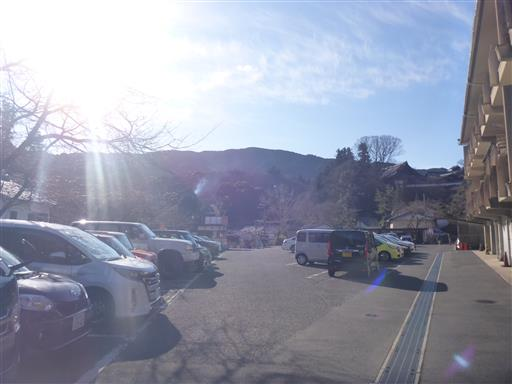
駐車場から坂を登る。

正月三ヶ日は入山料、駐車場が無料。ありがたいことだ。
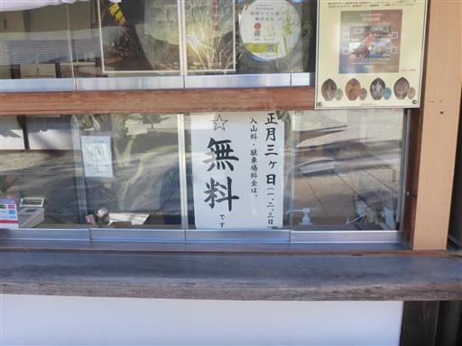
立派な仁王門。
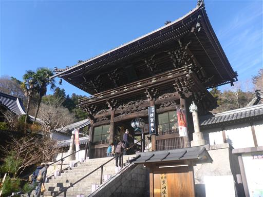
その先に延々と登廊が続く。階段は緩やかで比較的歩きやすい。
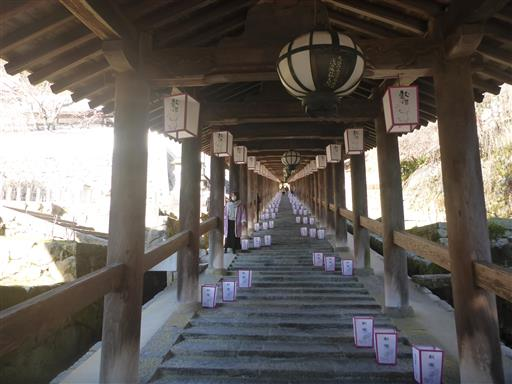
山の斜面につくられた寺は、まるで城壁のようだ。
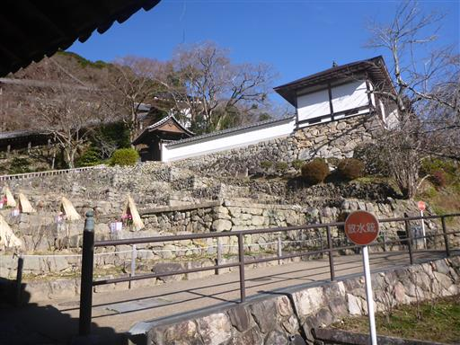
長谷寺は牡丹の名所。牡丹の季節ではないが、何株か咲いている。
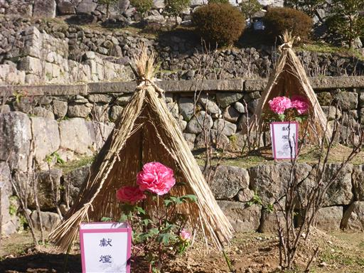
手水舎。コロナ禍の昨今、柄杓はない。
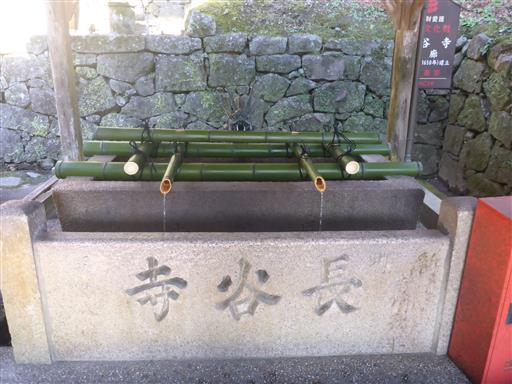
登ってきた階段を見下ろす。
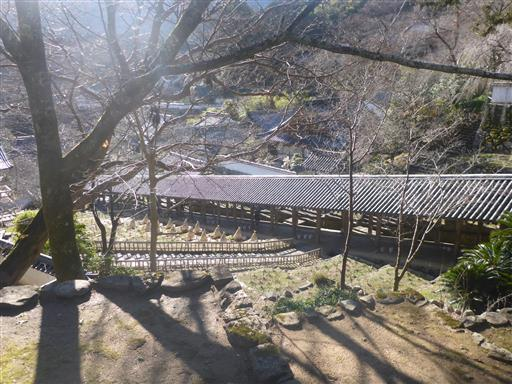
本堂の舞台の木組みが見えてきた。
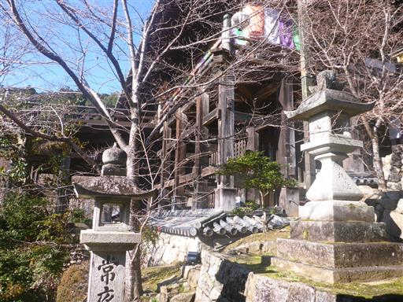
魅力的な階段があるが「関係者以外登るべからず」と書かれている。
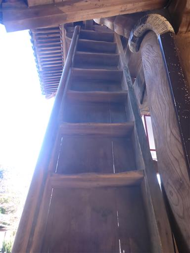
本堂は国宝。十一面観音像が祀られている。
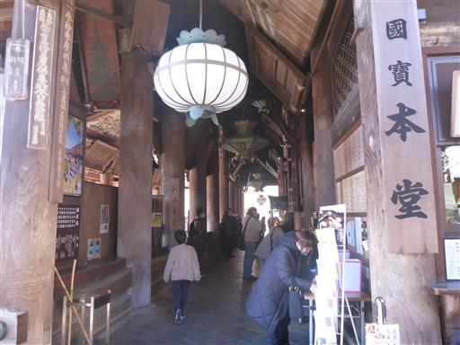
本堂をぐるりと一周。
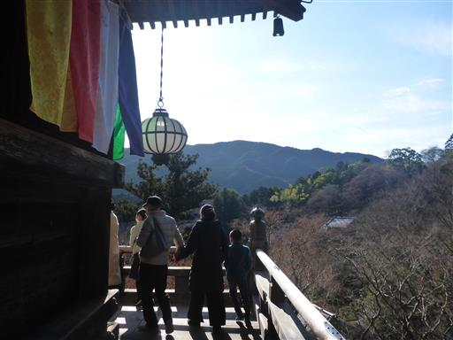
舞台が前に張り出している。外側に向かって傾斜があるのがちょっと怖い。
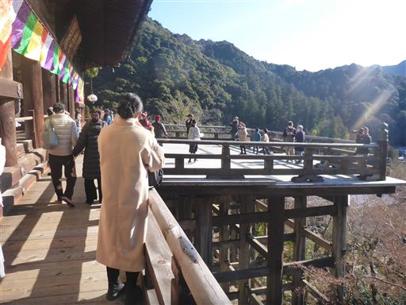
遠くの方に五重塔が見える。
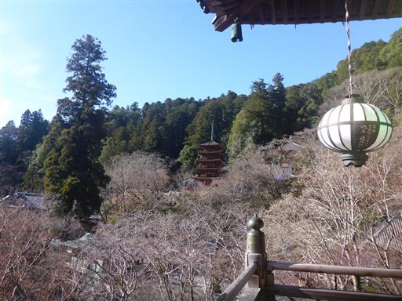
僧の数は多い。
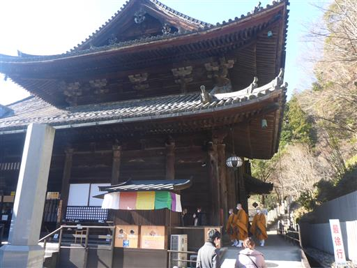
本堂からぐるっと境内を一周回って帰ることにする。
こちらは本長谷寺。長谷寺草創の地とのことだ。
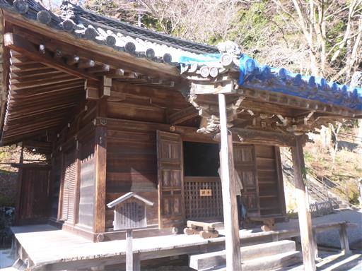
五重塔に到着。1954年に建立されたもので比較的新しい。
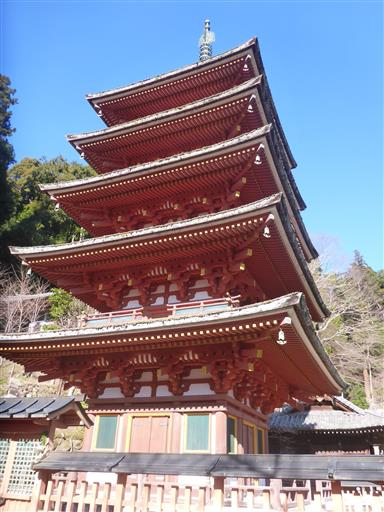
五重塔から眺める本堂。立派な建物だ。
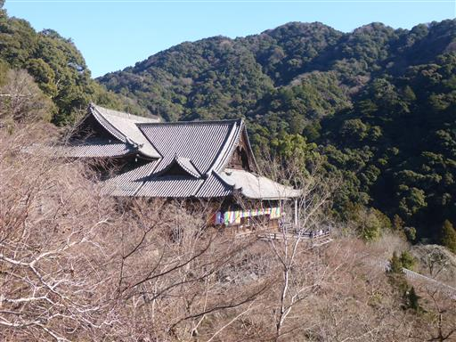
両親は最短コースを戻るとのことで、他のメンバーは広大な境内をぐるりと回る。
境内の一角に墓が並んでいる。
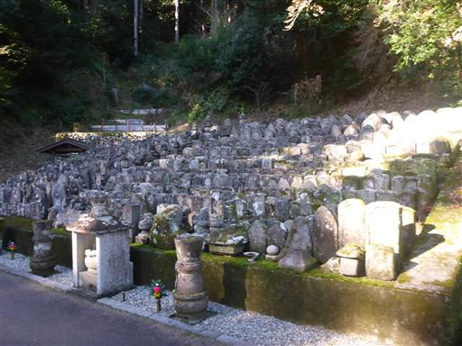
人通りの少ない階段を下る。
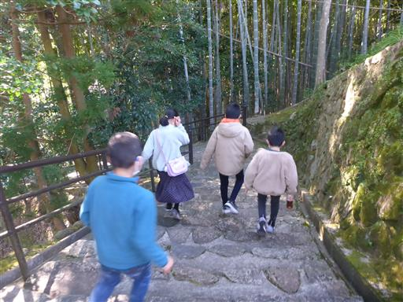
仁王門まで下って両親と合流した後、まだみんなお腹がすいていないとのことなので、
再び階段を登って、売店で御守りを購入する。
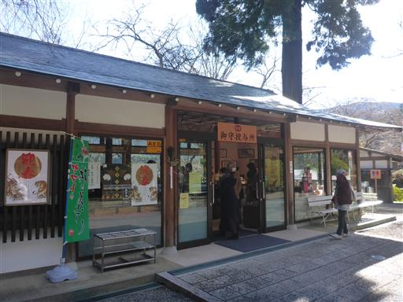
再び階段を下る。
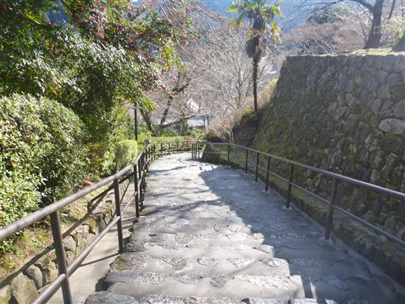
池で飼われている鯉。
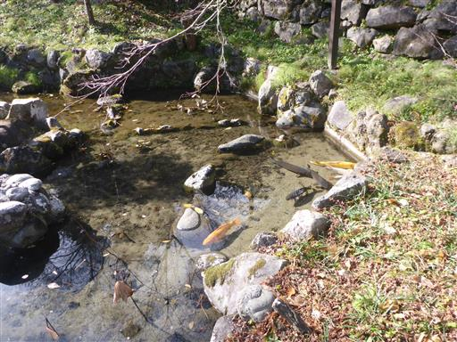
寺前にある酢屋長で昼食をとって帰宅する。
全国的には決して有名な寺ではないが、広い境内と立派な本堂
美しい景色と、非常に良い寺だった。
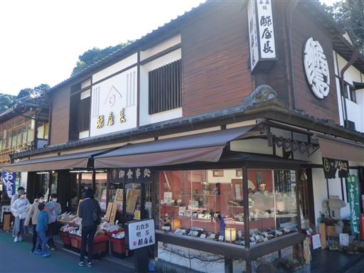